MAZDA 6 – Oferuję zadbany egzemplarz z 2015 roku (pierwsza rejestracja 2016).
Serwis tylko ASO. Co roku przeglądy i wymiany eksploatacyjne zgodnie z zaleceniami producenta (płyny, paski itd.). Pełna historia w elektronicznej książce.
Mały przebieg ok. 78000km.
Polski salon.
Jestem drugim właścicielem. Kupiłem przy przebiegu ok.46000. Podczas zakupu auto sprawdzane przez autotesto (mam dokumenty). Pierwszy właściciel też przejeżdżał 7-8tyś rocznie i serwisował wyłącznie w ASO.
Najlepszy z silników - 2.5l, auto jest żwawe od samego dołu i nie pali dużo. W dodatku bezawaryjny.
Pełne wyposażenie + dołożona kamerka vantrue N4 (przód, tył, wnętrze) z powerbankiem by w trybie postojowym nie obciążać akumulatora.
Prawy bok na dole widoczna rysa - chyba ktoś na parkingu się z czymś przeciskał. Nie robiłem jej, nie jest widoczna jak tylko auto się przykurzy i nic się z nią nie dzieje.
Niedawno robione hamulce (tarcze klocki tył, klocki przód) i podczas przeglądu w lutym m.in. komplet pasków. Za jakiś czas będą do zrobienia tuleje wahaczy z przodu (ASO czasem (zależy kogo zapyatać) twierdzi że już, na stacji kontroli pojazdów diagnosta wręcz przeciwnie - by jeszcze nie ruszać).
Koła letnie nokiany 19", zimówki Bridgestone 17" - niewielki przebieg, mają ok. 4lata.
Sprzedaję ze względu na to, że od roku sporadycznie jeżdżona, stała się drugim autem po otrzymaniu służbowego.
Wybrane elementy wyposażenia:
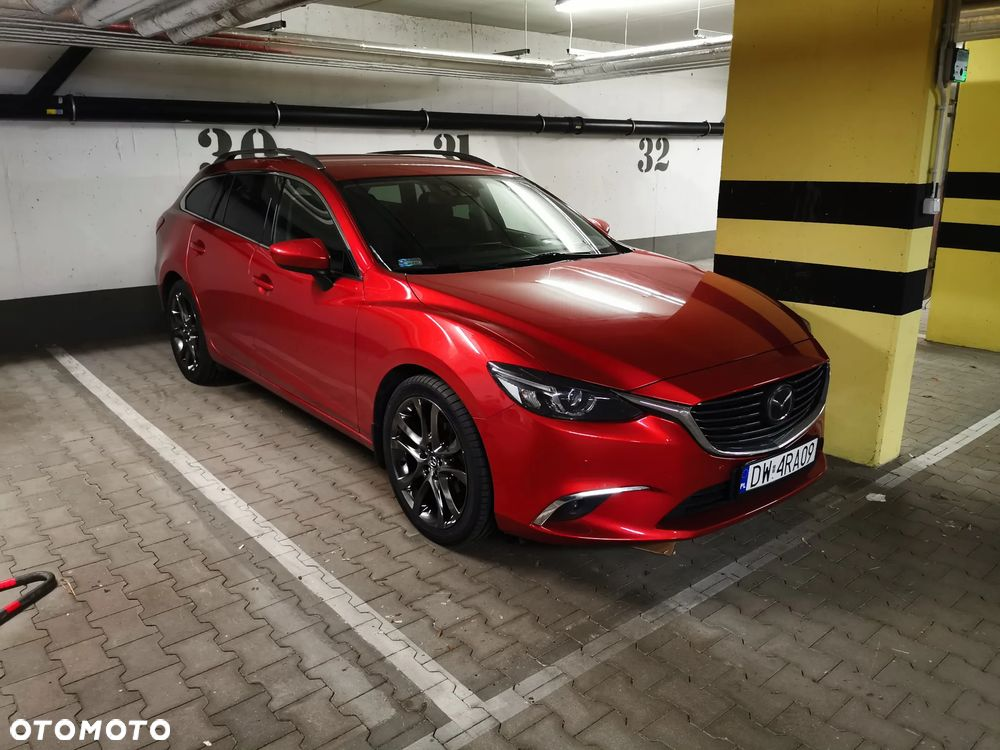
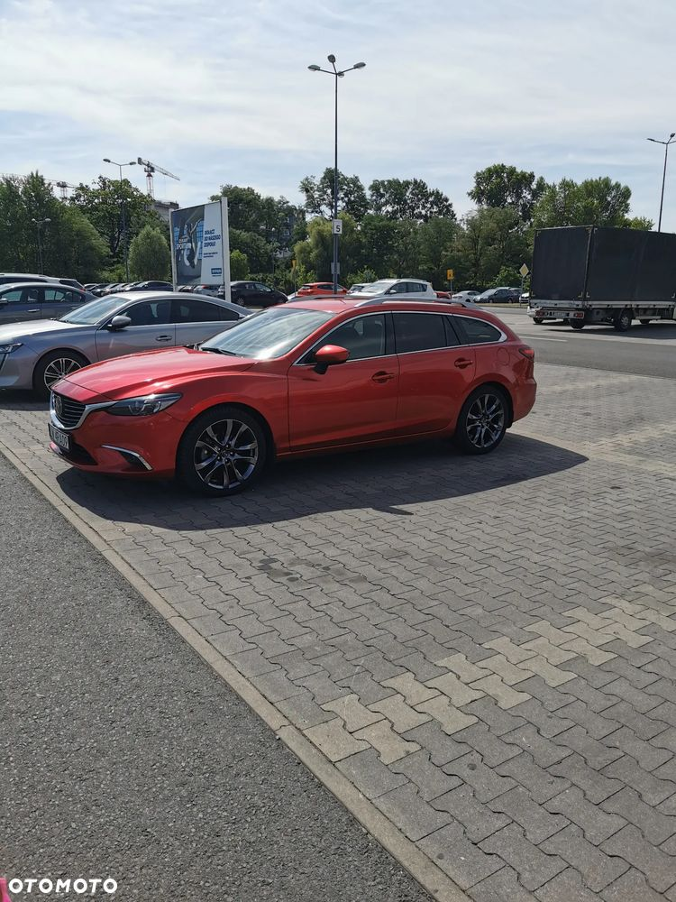
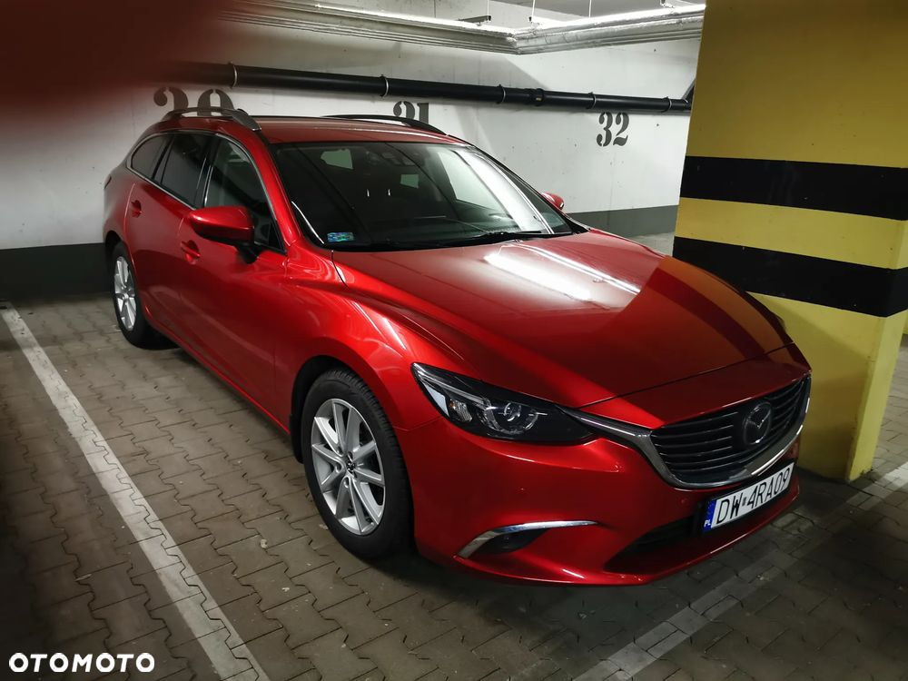
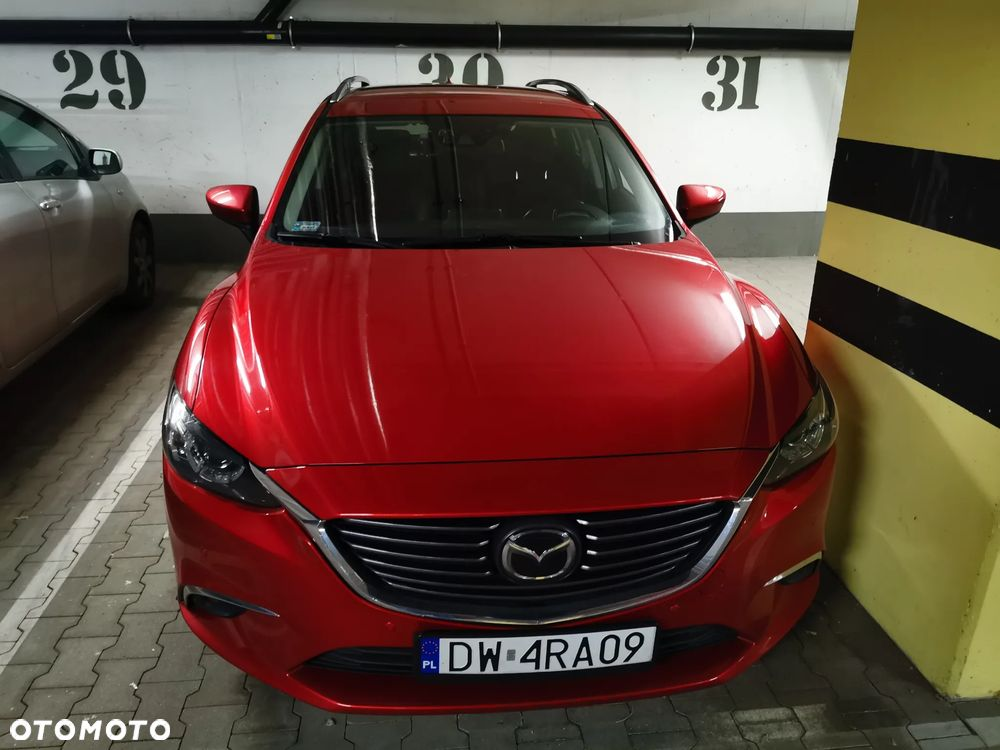
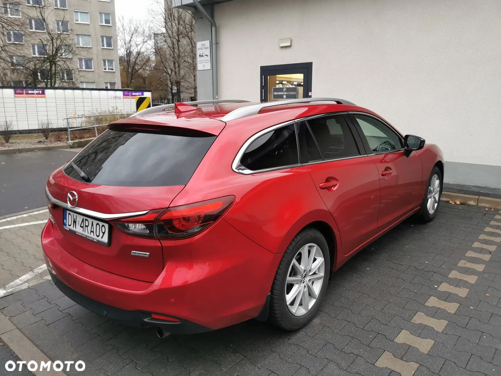
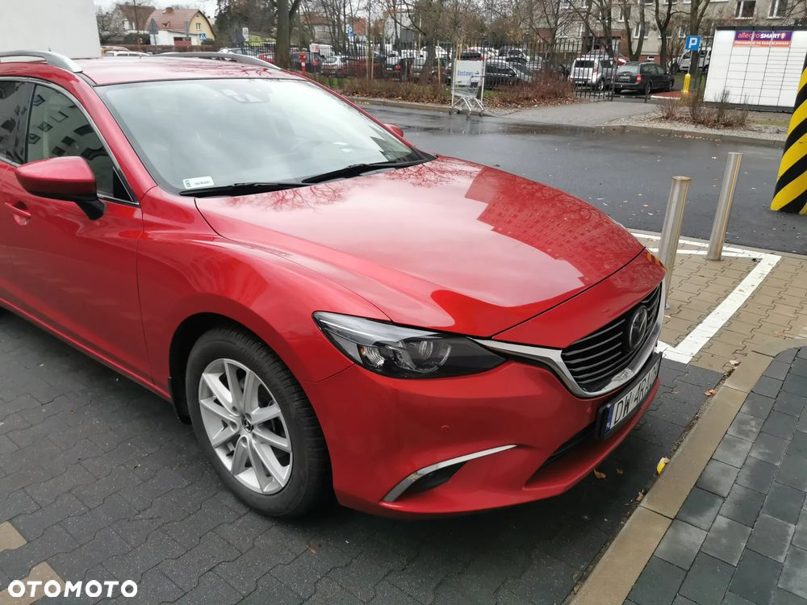
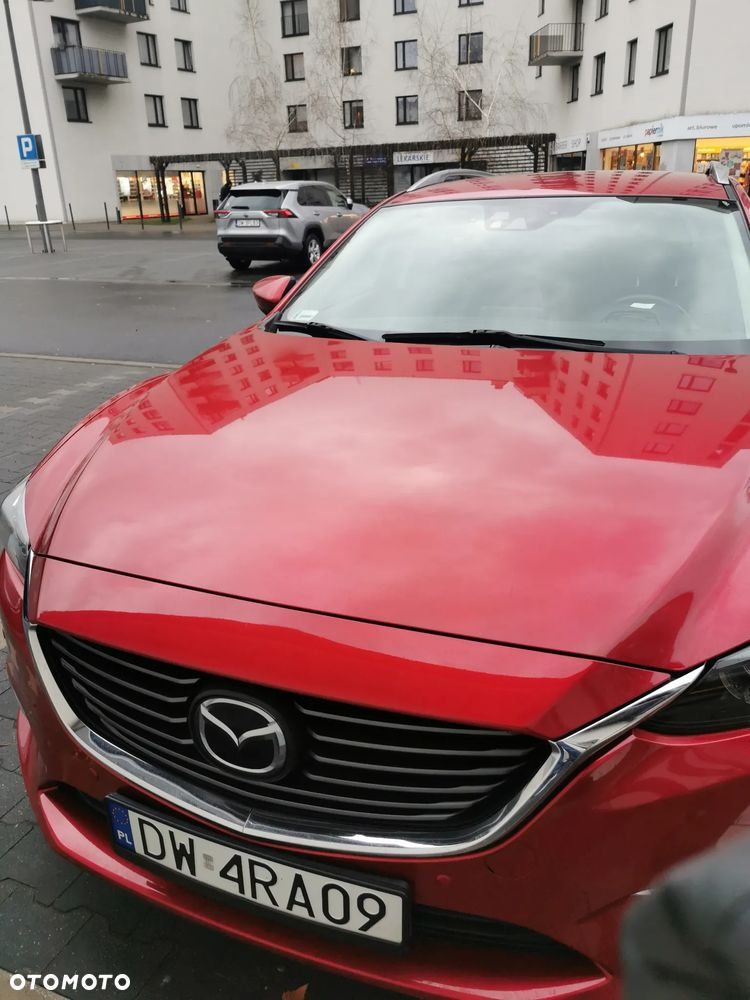
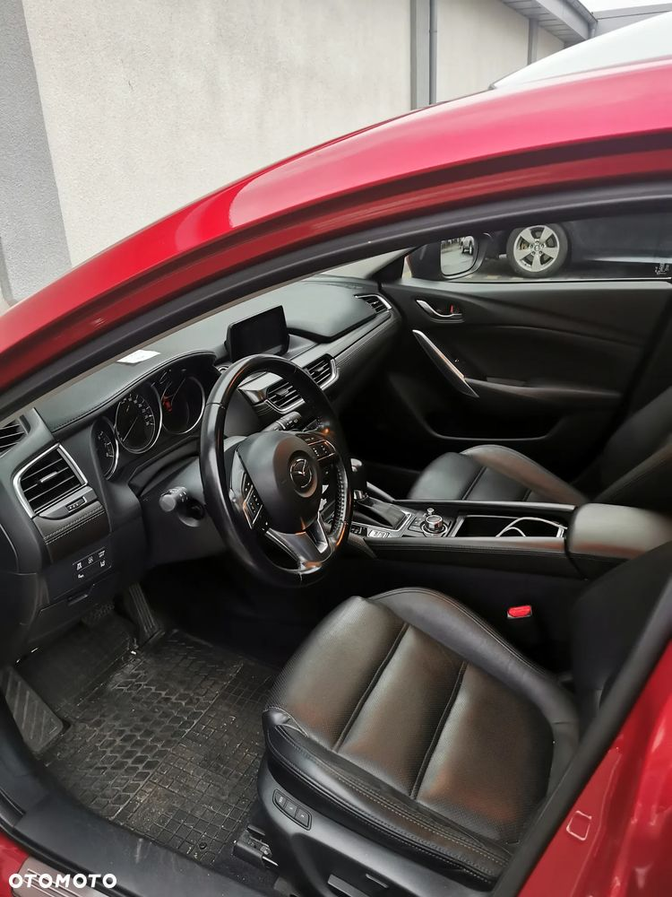
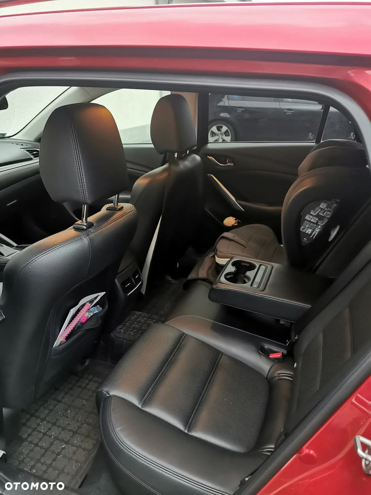
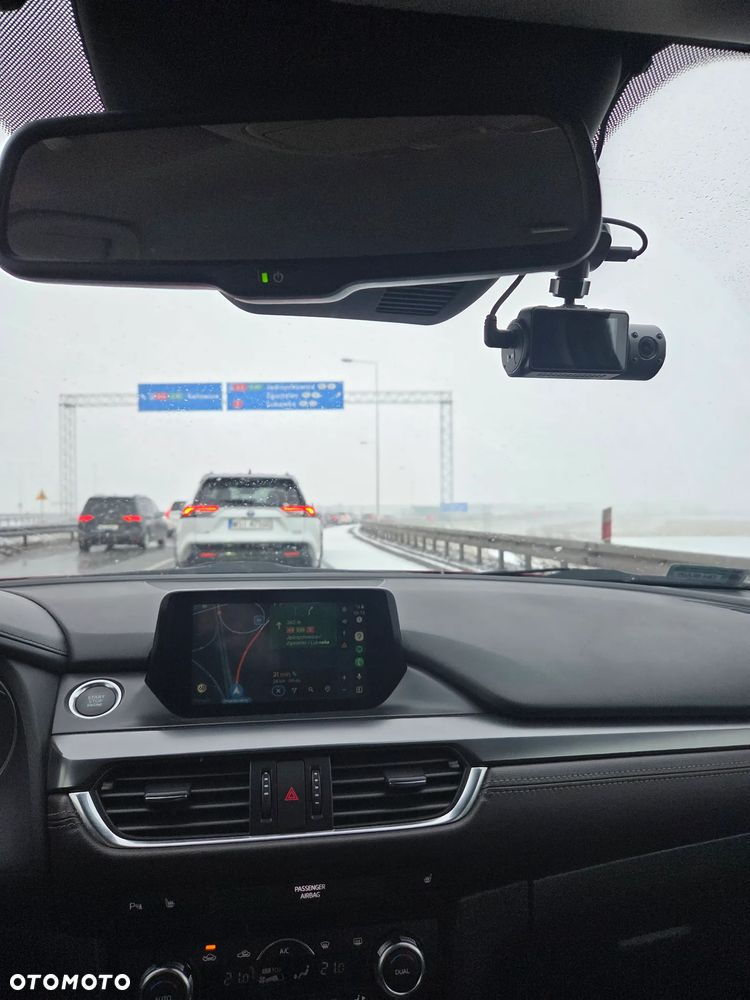
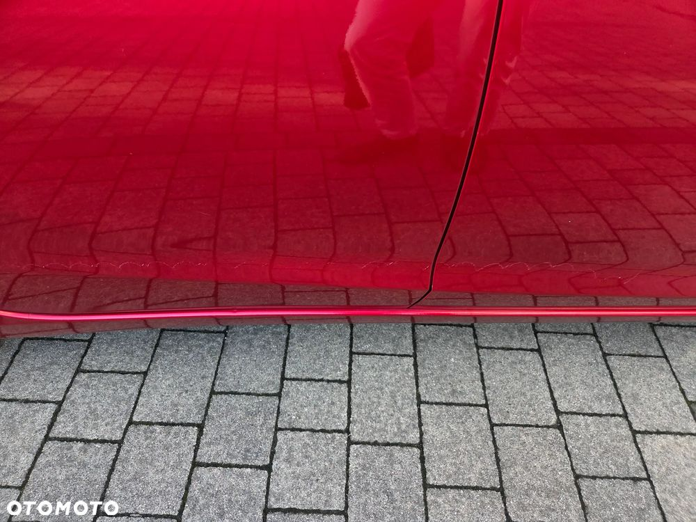
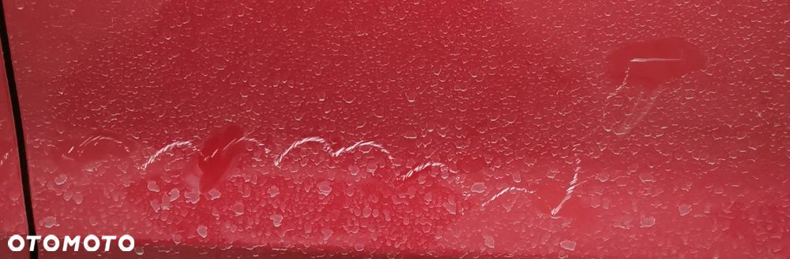
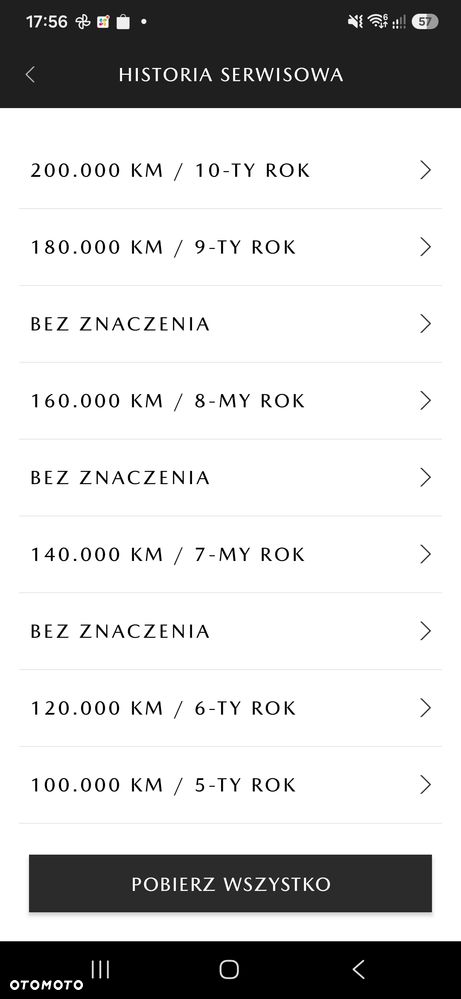